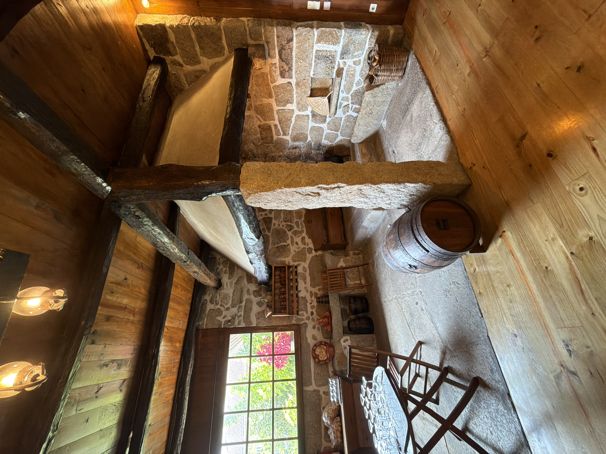
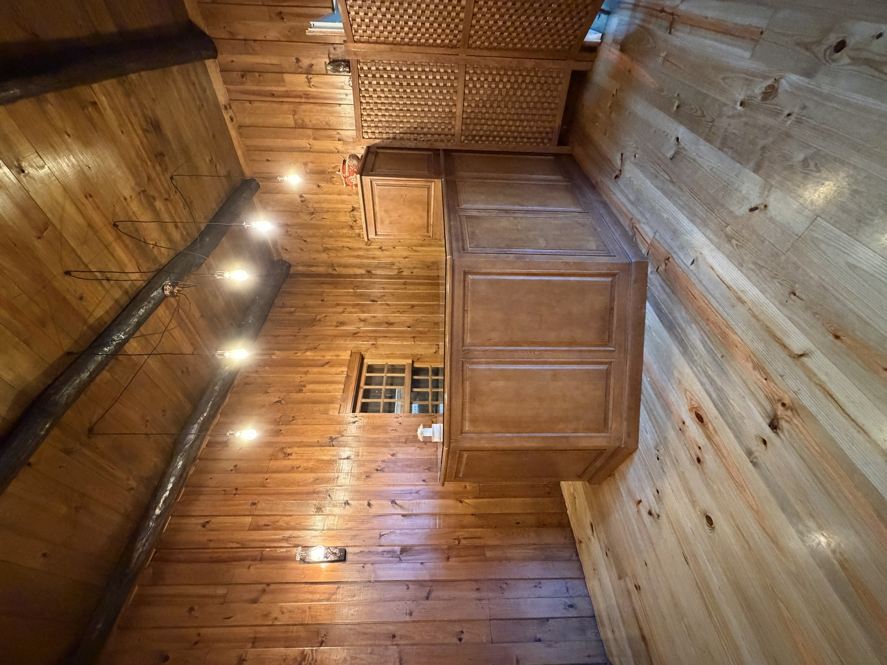
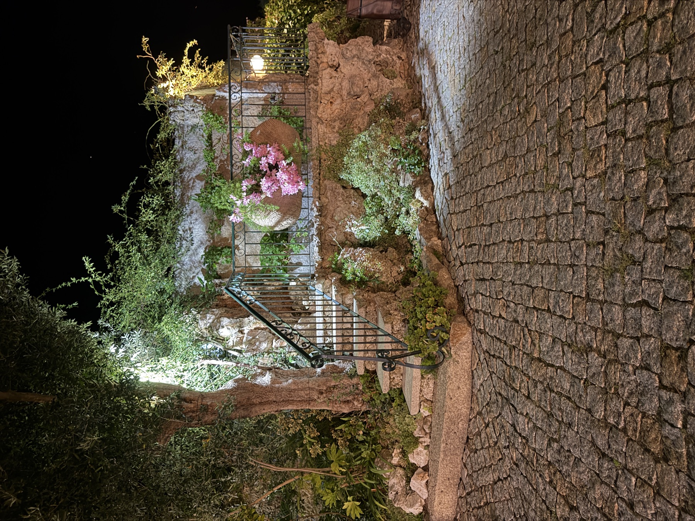
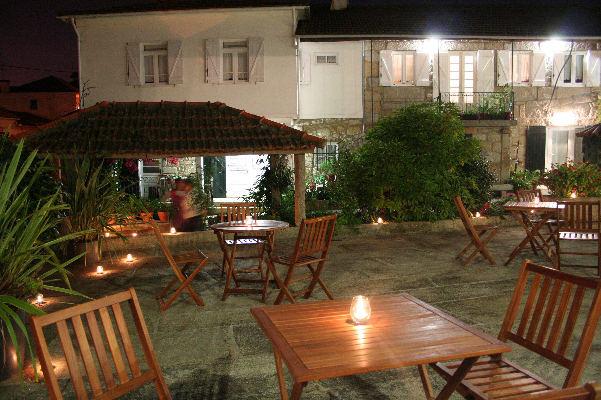

Conhecer a Quinta
Tudo começa com uma visita. Mostramos os diferentes espaços da Quinta e conversamos sobre aquilo que imaginam para a celebração.

Quinta Casal Camaz | Aveleda
Há mais de 30 anos que a Quinta Casal Camaz recebe casamentos, batizados, comunhões, eventos corporativos e outras celebrações em Aveleda, Vila do Conde.
Desde 1995
A Quinta Casal Camaz começou como uma casa agrícola, muito antes de abrir as portas a casamentos e celebrações.
Foi em 1995 que tudo começou a mudar. Por ocasião de um casamento na família, alguns dos espaços da casa agrícola foram preparados para receber a celebração. Dessa transformação nasceu o primeiro salão da Quinta e, com ele, uma nova forma de dar vida à casa.
Nas décadas seguintes, a Quinta foi crescendo com a família. O primeiro salão ganhou uma nova função, surgiu o atual salão principal e os diferentes espaços foram sendo adaptados àquilo que hoje é a Quinta Casal Camaz.
Mais de 30 anos depois, e já na terceira geração, a Quinta continua a evoluir sem deixar para trás o legado que a trouxe até aqui.







Os salões
O salão principal é o centro de cada celebração. Ao lado, o salão original da Quinta funciona como espaço complementar, permitindo criar diferentes momentos ao longo do serviço.





JARDINS & EXTERIORES
Os espaços exteriores fazem parte da celebração e podem receber diferentes momentos do dia, desde a cerimónia civil e a receção dos convidados até refeições ao ar livre.
O centro do jardim oferece um cenário natural para cerimónias civis no exterior, rodeado de vegetação e protegido pela sombra das árvores.
A antiga eira pode ser preparada para receber refeições e momentos da celebração ao ar livre.
até 60 convidados
Mais do que um espaço
Tudo começa com uma visita. Mostramos os diferentes espaços da Quinta e conversamos sobre aquilo que imaginam para a celebração.
Definimos em conjunto a utilização dos espaços e a decoração da Quinta, preparando cada ambiente para os diferentes momentos da celebração.
A prova permite escolher e acertar a ementa antes do grande dia. Em parceria com a JAlmeida Catering, todas as refeições são confecionadas na própria Quinta.
No grande dia, tudo estará pronto para vos receber. Com exclusividade total do espaço, podem desfrutar da Quinta em privacidade absoluta.
Perguntas frequentes
O salão principal tem capacidade para até 180 convidados. A Quinta recebe eventos para grupos com mais de 30 pessoas.
Sim. O jardim pode ser preparado para receber cerimónias civis no exterior, num espaço rodeado de vegetação e com sombra natural das árvores.
A Quinta dispõe de diferentes espaços cobertos que permitem adaptar os vários momentos da celebração em dias de chuva. O salão complementar pode receber os aperitivos, enquanto o alpendre totalmente coberto e o bar interior, situado na antiga cozinha regional da Quinta, oferecem outros espaços para receber os convidados.
Sim. As alergias, intolerâncias e outras necessidades alimentares dos convidados, como opções vegetarianas, veganas, sem glúten ou ementa infantil, podem ser comunicadas previamente, para serem consideradas na preparação da ementa.
Sim. A Quinta dispõe de acessos preparados para pessoas com mobilidade reduzida, instalações sanitárias acessíveis, fraldário e estacionamento adaptado próximo dos acessos.
Galeria
Como chegar
A Quinta Casal Camaz situa-se em Aveleda, Vila do Conde, a poucos minutos do Aeroporto do Porto e com acesso rápido pela A28.
Vamos conversar?
Pode marcar uma visita à quinta por email ou telefone. Conte-nos a data, o tipo de evento e o número aproximado de convidados.